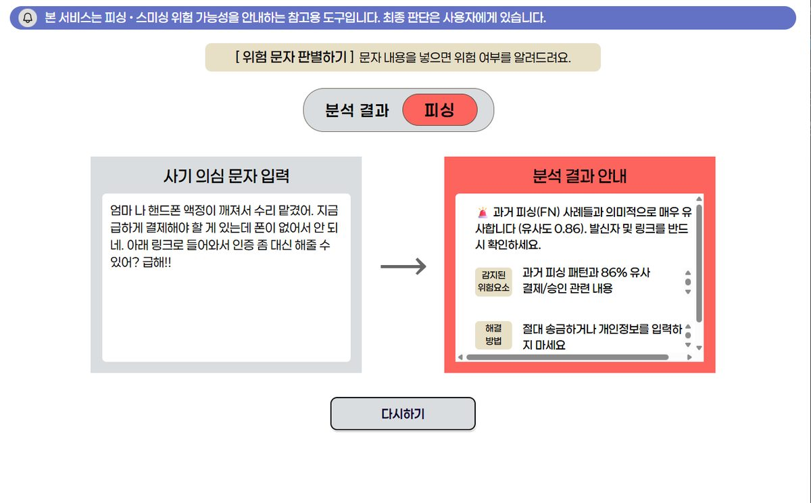

KoBERT 분류기와 SBERT 오탐 임베딩 뱅크를 결합해, 놓치면 안 되는 쪽으로 설계한 탐지 시스템

피싱 데이터는 전체의 1.4%뿐이었습니다. 이 정도 불균형에서는 모델이 '전부 정상'이라고만 답해도 정확도가 98.6%가 나옵니다. 정확도로 모델을 고르면 아무것도 탐지하지 않는 모델이 1등이 됩니다.
35.13으로 설계했습니다.4단계 Stratified 분할로 각 분할의 클래스 비율을 유지했습니다.SBERT 오탐(FN) 임베딩 뱅크를 2차 방어막으로 구축했습니다.Test Recall 0.9672 / Precision 0.9077을 달성했고, 웹 서비스로 배포해 실제로 문자를 넣어볼 수 있는 형태까지 완성했습니다. 교내 해커톤에서 대상을 받았습니다. 이후 같은 모델을 Django 웹 서비스(SilverGuard)로 확장해 API 응답 시간을 80% 이상 단축했습니다. 모델을 만드는 데서 끝내지 않고 사람이 실제로 쓰는 형태까지 끌고 간 프로젝트입니다.
왜 그 방법을 택했는지, 무엇을 택하지 않았는지 적었습니다.
한국어 텍스트 증강은 현실에 없는 어색한 문장을 만들어 노이즈가 될 위험이 컸습니다. 해커톤 시간 제약도 있어 가중치 조절 + 2차 검증이라는 더 안전한 경로를 택했습니다.
KoBERT는 단어·문맥 단위 표현이라 분류에 강하고, SBERT는 문장 전체를 벡터로 만들어 의미적 유사도 비교에 특화돼 있습니다. 같은 모델을 두 번 쓰는 대신 성질이 다른 둘을 직렬로 걸었습니다.
Recall만 극대화하면 정상 문자까지 차단해 사용자가 서비스를 꺼버립니다. Precision 0.9077을 함께 유지하는 지점을 임계값으로 잡았습니다.
관심 있는 항목만 펼쳐 보세요.
노년층을 노린 피싱 문자는 계속 표현을 바꿔 가며 들어옵니다. 서비스 대상이 노년층이라 미탐 한 건의 비용이 오탐 한 건보다 훨씬 컸습니다.
웹 서비스에서 요청이 올 때마다 모델을 로드하면 응답이 느려집니다. Django AppConfig.ready()에서 구동 시 한 번만 로드해 전역에 상주시키는 싱글톤 방식으로 바꿨고, 로드 오버헤드가 사라져 API 응답 시간이 80% 이상 단축됐습니다.
모델 가중치가 약 370MB라 GitHub 용량 제한에 걸립니다. 저장소를 무겁게 만드는 대신 gdown으로 클라우드에서 실행 시점에 내려받는 로더를 만들었습니다. 저장소는 가볍게 유지되고 배포는 그대로 됩니다.
고령층 대상 서비스라 회원가입 자체가 진입 장벽입니다. 브라우저 세션 키를 식별자로 써서 로그인 없이 최근 검사 기록 20건을 볼 수 있게 했습니다.
피싱이 1.4%인 데이터에서는 전부 정상이라고 답해도 정확도 98.6%가 나옵니다. 평가 기준을 Recall 중심으로 바꾸고, 클래스 가중치 35.13으로 소수 클래스의 오답에 더 큰 벌점을 줬습니다.
KoBERT가 놓치는 건 대부분 표현만 살짝 바꾼 변종이었습니다. 더 큰 모델을 쓰는 대신, 놓친 사례(FN) 자체를 SBERT로 임베딩해 뱅크로 쌓고 유사도 0.80 이상이면 의심으로 승격시켰습니다. 놓친 사례가 쌓일수록 방어막이 두꺼워지는 구조입니다.
가중치를 35배나 준 모델은 과적합을 의심받습니다. 과적합이었다면 소수 클래스에 과반응해 Precision이 같이 무너졌을 것인데 0.9077을 유지했고, 학습셋이 아닌 Test셋에서 나온 수치라는 점을 함께 제시했습니다.
이상탐지에서 임계값은 통계가 아니라 비용의 문제라는 것을 배웠습니다. 금융의 이상거래탐지(FDS)도 같은 구조의 판단을 요구한다고 생각합니다.